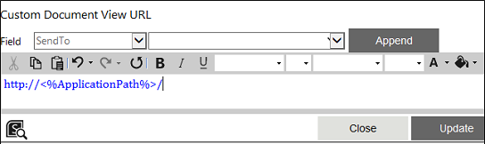
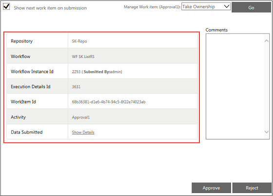

No
You can specify a message in the Custom Document View URL for the Invoke Form activity in this property window. To access this window, click the edit button for the 'Custom Document View URL' property.

The Custom Document View URL window has a text editor to enter the Custom Document View URL. You can either enter a URL directly in the text editor or use the following Field controls to enter the URL:
For more details, see Custom Document View URL.
Steps to set the Custom Document View URL property
Custom Document View
Custom Document View can be viewed on the left side of the WorkItem Detail View page inside the frame as shown in the following image:

AVEVA Work Tasks allows you to provide a custom document view while using any human activities. This can be achieved by entering the proper URL for the Custom Document View URL property.
By default, the custom document view for any human resource activity normally shows the item metadata which alerted the workflow.
You can change the document view, if required. If a URL is provided to the custom document view URL property, this is overridden with the default document view. If you want to show a different form in the Custom Document View, see Custom Document View URL for Forms.
Any URL can be provided to this property and it can be a URL to your custom page also.
Custom Document View URL for Forms
If the workflow is alerted due to a workflow association in forms, the document view shows the form that alerted the workflow. AVEVA Work Tasks supports the following URL with parameters. You can pass the parameters based on the requirement. Do not enter any internet links.
Use the following URL with respective parameters to show any forms:
http://<%ApplicationPath%>/BPMUITemplates/Default/SkeltaForms/FormDocumentView.aspx?FormName=<Form Name>&FormVersion=<Form Version>&FormInstanceXmlVariable=<Xml Variable Name>
Note: Remove the extra spaces between 'http:' and '//<%ApplicationPath%>', if any.
Example:
For showing any form and populate data from XML variable, pass the following parameters in query string provided both having same XML schemas.
FormName=<Form Name>& FormInstanceXmlVariable=<Xml Variable Name>
Sample URL:
http://<%ApplicationPath%>/BPMUITemplates/Default/SkeltaForms/FormDocumentView.aspx?FormName=Leave Report&FormInstanceXmlVariable=LeaveReportxml
When the workflow is executed, the Custom Document View of the specified form populated using XML variable is displayed in the Work Item detail View page.